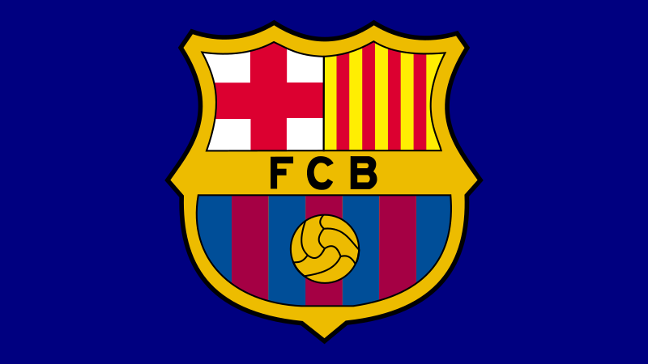

Soccer Ranker
Soccer Ranker
FC Barcelona: Los 10 Mejores Actualmente Jugando Jugadores
Los aficionados de todo el mundo votaron para determinar qué jugador del FCB les parecía mejor y los resultados muestran quién tiene la puntuación más alta!
PUBLICADO FEB 8, 2024

Para celebrar el 125 aniversario de la creación del FC Barcelona y su reciente triunfo en La Liga, se pidió a los aficionados
que enviaron sus votos para saber quiénes son sus mejores jugadores y los resultados se contaron en la encuesta de los 10
mejores del FCB en r/Barca en de reddit.
Con una amplia variedad de jugadores para elegir, no sorprende que muchos votantes tuvieran dificultades para elegir al
mejor. Sin embargo, algunos jugadores han destacado más ante los aficionados y disfrutadores, ya sea por sus habilidades,
personalidad, o muchas mas. El equipo no estaría lo mismo sin ellos.
10
Raphinha
El valioso jugador brasileño de FCB. Aunque es un jugador relativamente nuevo, rápidamente ha demostrado sus cualidades técnicas y se ha adaptado muy bien a su estilo de juego. Es el hombre principal del Barcelona con G/As en muchos momentos durante cada temporada. Posee una gran capacidad de regate, control de la pelota y pases precisos como típico extremo derecho. Y con su alto ritmo de trabajo, es adaptable y puede incluso caer en posiciones semidefensivas. Un brasileño con clase.
9
İlkay Gündoğan
El jugador más experimentado del FCB. Como el anterior capitán del triplete & al ganador la liga de campeones Manchester City en 2023, es un activo que se no tiene precio. A menudo considerado un jugador de grandes partidos, muestra repetidamente su clase a través de su variedad de pases, pases en profundidad y anotación de goles habilidad como mediocampista central.
8
Ferran Torres
El delantero más versátil del FCB. Tiene unas habilidades técnicas fenomenales que lo convierten en un activo valioso en el tercero atacante. Y con su polivalencia le permite jugar como delantero centro, lateral derecho o lateral extremo izquierdo y sobresale en todos ellos. Su capacidad para adaptarse a los diferentes roles proporcionan flexibilidad táctica para el equipo. Él es también un goleador prolífico del FCB y a menudo se le considera un embrague jugador.
7
Lamine Yamal
El talentoso joven prodigio del FCB. Siendo sólo un adolescente, sus habilidades impecables a una edad tan temprana como extremo derecho han hecho que incluso se le compare con grandes del Barcelona como Lionel Messi. Es una fuerza a tener en cuenta con su atrevimiento regate y pases habilidades y tiene una mayor capacidad de creación de posibilidades que la mayoría de los mayores jugadores. Es una auténtica joya del Barcelona, no sólo por el momento, sino para el futuro.
6
João Cancelo
El zaguero de clase mundial del FCB. Como zaguero, es versátil, porque no sólo puede jugar su posición principal de lateral derecho, también puede jugar como lateral izquierdo, extremo izquierdo o extremo derecho. Sin embargo, en todas estas posiciones es conocido por su velocidad, capacidades ofensivas, habilidades técnicas, habilidades de regate, creatividad y capacidad de cruce. Es un jugador clave para el FCB primer equipo y tiene la calidad y experiencia, especialmente desde que formó parte del equipo ganador del triple del Manchester City durante la mitad de la temporada en 2023.
5
Ronald Araujo
Defensor central de clase mundial del FCB. Es un defensor fenomenal, que es fuerte, rápido y genial en duelos aéreos. El aborda bueno, y a veces puede hacer pases diagonales largos que pueden ser crucial para avanzar en el juego. Posee un gran ritmo y, como tercer capitán del FCB, también posee un gran liderazgo.
4
Marc-André ter Stegen
La pared de ladrillos del FCB en defensa. Es un verdadero portero de clase mundial. A menudo los aficionados del FCB lo consideran el "GOATkeeper". Él se ubica entre el top 5 mejores porteros actuales actualmente debido a su fenomenal parar tiros, habilidad para pasar, reflejos, balón habilidad de juego y salvamentos en picado. Su clase se ha roto múltiples registros, y el más increíble llega la reciente temporada 2022-2023 donde solo encajó 18 goles en 38 partidos de liga, empatándolo con el no. 1 registro de ratio de goles concedidos/partidos en la historia de La Liga. Él es el actual segundo capitán del FC Barcelona.
3
Pedri
El jugador más creativo del FCB. Es rápido y superdotado en habilidades técnicas. Sus pases son casi similares a los de leyendas del FCB como Andrés Iniesta y Lionel Messi - y por lo que es un gran activo para el equipo con sus habilidades de clase. Mientras esta propenso a lesiones, a menudo se dice que “un Pedri en forma no puede ser enviado a la banca”. Su impacto en el campo es tremendo.
2
Gavi
El jugador más activo del FCB. Puede jugar en múltiples posiciones y tiene el ritmo de trabajo más alto de todo el equipo, lo que se acredita su juventud y su severa pasión por el equipo. Si bien juega principalmente como mediocampista central, la gente suele decir que “él está en todas partes en el campo” porque siempre está ahí en la mayoría de las jugadas, incluso en defensa. Sin él en el campo, hay un cambio visible en el estilo de juego del equipo FCB.
1
Frenkie de Jong
El mejor jugador del FCB, con diferencia. De Jong es conocido por su versatilidad, pudiendo jugar en varios roles de mediocampo. Su adaptabilidad permite al Barcelona utilizarlo en diferentes posiciones según las necesidades del equipo. El tambien posee excelente control del balón, habilidad para pasar, visión excepcional, y es conocido por su habilidad para dictar el tempo del juego y distribuir la pelota de manera efectiva. Esto es crucial para el estilo de juego basado en la posesión del Barcelona. Él también tiene un alto ritmo de trabajo que está casi a la par del de Gavi.